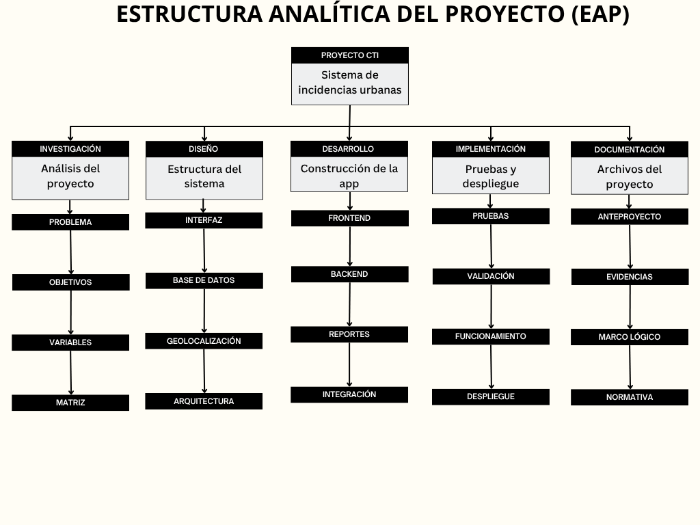

Marco lógico
Desarrollo metodológico del proyecto de aplicación móvil con geolocalización para la gestión de incidencias urbanas.
Desarrollo metodológico del proyecto de aplicación móvil con geolocalización para la gestión de incidencias urbanas.
El análisis de involucrados identifica a todos los actores que tienen una relación directa o indirecta con el proyecto. Se evalúa su nivel de interés frente a las problemáticas urbanas y el impacto que el sistema podría generar sobre ellos, permitiendo priorizar decisiones de diseño e implementación.
| Involucrado | Interés | Impacto |
|---|---|---|
| Ciudadanos | Reportar incidencias | Alto |
| Alcaldía | Gestionar reportes | Alto |
| Empresas públicas | Solucionar problemas | Medio |
| Comunidad | Mejorar entorno urbano | Alto |
| Administradores | Supervisar sistema | Medio |
Esta matriz profundiza el análisis de cada actor, describiendo qué esperan del proyecto (expectativas), con qué recursos o capacidades cuentan para apoyar su desarrollo (fortalezas) y qué factores pueden dificultar su participación o comprometer los resultados esperados (riesgos). Es la base para definir estrategias de gestión del cambio y mitigación de amenazas durante la ejecución.
| Involucrado | Expectativas | Fortalezas | Riesgos |
|---|---|---|---|
| Ciudadanos | Mejorar tiempos de atención | Participación ciudadana | Poco uso de la aplicación |
| Alcaldía | Optimizar gestión urbana | Acceso a información centralizada | Sobrecarga administrativa |
| Empresas públicas | Resolver incidencias rápidamente | Personal técnico capacitado | Demoras operativas |
| Comunidad | Mejorar entorno urbano | Comunicación con entidades | Baja interacción |
| Administradores | Supervisar el sistema | Control y monitoreo | Fallos técnicos |
Este análisis articula la lógica de intervención del proyecto: describe cada acción propuesta, el medio tecnológico o metodológico que la soporta, la causa que busca atender y el problema raíz al que responde. Permite verificar la coherencia entre lo que se hace y el cambio que se espera generar en la gestión de incidencias urbanas.
| Acción | Medio | Causa | Problema |
|---|---|---|---|
| Desarrollo de aplicación móvil | Geolocalización | Falta de herramientas tecnológicas | Deficiente gestión de incidencias |
| Implementación de reportes digitales | Plataforma centralizada | Canales tradicionales ineficientes | Demora en atención |
| Integración ciudadano-entidad | Sistema web y móvil | Baja comunicación institucional | Baja participación ciudadana |

Problema central, causas y efectos identificados.

Transformación del problema en medios y fines.

Relación entre acciones, medios y causas.

Organización jerárquica del proyecto y componentes.

Relación entre ciudadanos, entidades y administradores.
El resumen narrativo corresponde a la columna de objetivos de la Matriz de Marco Lógico. Su propósito es sintetizar, de manera clara y jerárquica, el fin, propósito, componentes y actividades del proyecto. Esta estructura permite verificar la relación causal entre las actividades metodológicas, los productos esperados y los resultados que se buscan alcanzar con el anteproyecto.
| Nivel | Código | Resumen narrativo |
|---|---|---|
| Fin | F.1 | Contribuir al mejoramiento de la gestión urbana y comunitaria mediante herramientas tecnológicas de reporte ciudadano. |
| Fin | F.2 | Fortalecer la comunicación entre ciudadanos y entidades responsables de servicios públicos y seguridad. |
| Fin | F.3 | Incrementar la participación ciudadana en el reporte de incidencias urbanas. |
| Propósito | P.1 | Implementar una plataforma web y móvil para el reporte y seguimiento de incidencias urbanas mediante geolocalización y conexión directa con entidades responsables. |
| Componente | C.1 | Sistema digital de reportes ciudadanos implementado. |
| Componente | C.2 | Módulo de geolocalización y ubicación en tiempo real integrado. |
| Componente | C.3 | Plataforma de seguimiento y notificaciones desarrollada. |
| Componente | C.4 | Integración con entidades públicas y servicios de emergencia realizada. |
| Actividad C.1 | A.1.1 | Diseñar formularios digitales para incidencias urbanas. |
| Actividad C.1 | A.1.2 | Crear el sistema de registro de usuarios. |
| Actividad C.1 | A.1.3 | Implementar el módulo de reportes ciudadanos. |
| Actividad C.1 | A.1.4 | Validar el funcionamiento del sistema de incidencias. |
| Actividad C.2 | A.2.1 | Integrar mapas interactivos en la aplicación. |
| Actividad C.2 | A.2.2 | Permitir el envío de ubicación en tiempo real. |
| Actividad C.2 | A.2.3 | Mostrar incidencias geolocalizadas en el mapa. |
| Actividad C.2 | A.2.4 | Validar coordenadas y precisión GPS. |
| Actividad C.3 | A.3.1 | Diseñar el sistema de seguimiento de incidencias. |
| Actividad C.3 | A.3.2 | Implementar estados de atención de reportes. |
| Actividad C.3 | A.3.3 | Crear notificaciones para ciudadanos. |
| Actividad C.3 | A.3.4 | Optimizar la comunicación entre usuarios y entidades. |
| Actividad C.4 | A.4.1 | Integrar empresas de servicios públicos al sistema. |
| Actividad C.4 | A.4.2 | Configurar comunicación con autoridades y emergencias. |
| Actividad C.4 | A.4.3 | Implementar panel administrativo y operadores. |
| Actividad C.4 | A.4.4 | Realizar pruebas generales de funcionamiento. |
Los componentes representan los productos principales necesarios para cumplir el propósito del proyecto y garantizar el correcto funcionamiento del sistema de incidencias urbanas.
| Componente | Objetivo específico | Indicador | Medios de verificación | Supuestos |
|---|---|---|---|---|
| Identificación de necesidades ciudadanas | Identificar las principales necesidades de los ciudadanos. | Número de necesidades identificadas. | Encuestas y análisis realizados. | Participación de la comunidad. |
| Diseño de la aplicación móvil | Diseñar la estructura funcional de la aplicación. | Prototipo funcional desarrollado. | Mockups y documentación técnica. | Recursos tecnológicos disponibles. |
| Sistema de gestión de reportes | Desarrollar sistema de almacenamiento y gestión. | Reportes registrados correctamente. | Base de datos y pruebas funcionales. | Correcto funcionamiento del sistema. |
| Evaluación del impacto del sistema | Evaluar el impacto tecnológico y ciudadano. | Nivel de satisfacción ciudadana. | Encuestas y resultados finales. | Uso constante de la plataforma. |
Las actividades representan las acciones metodológicas y técnicas necesarias para desarrollar cada uno de los componentes definidos en la estructura analítica del proyecto.
| Actividad | Componente | Responsable | Fecha estimada |
|---|---|---|---|
| Identificar necesidades ciudadanas. | Identificación de necesidades ciudadanas | Equipo de investigación | Mes 1 |
| Diseñar estructura funcional de la aplicación. | Diseño de la aplicación móvil | Equipo de desarrollo | Mes 2 |
| Implementar formularios digitales y reportes. | Sistema de gestión de reportes | Equipo técnico | Mes 3 |
| Integrar geolocalización y mapas interactivos. | Sistema de gestión de reportes | Equipo backend | Mes 4 |
| Realizar pruebas y evaluación del sistema. | Evaluación del impacto del sistema | Equipo de pruebas | Mes 5 |
El presupuesto contempla los recursos tecnológicos y operativos necesarios para el diseño, implementación y validación del sistema de incidencias urbanas.
| Ítem | Costo | Fuente de financiamiento |
|---|---|---|
| Diseño de aplicación móvil | $1.500.000 | Recursos propios |
| Desarrollo sistema web y móvil | $3.000.000 | Recursos propios |
| Integración de geolocalización | $800.000 | Recursos propios |
| Base de datos y almacenamiento | $700.000 | Recursos propios |
| Pruebas y validación | $500.000 | Recursos propios |
| Total | $6.500.000 | Recursos propios |